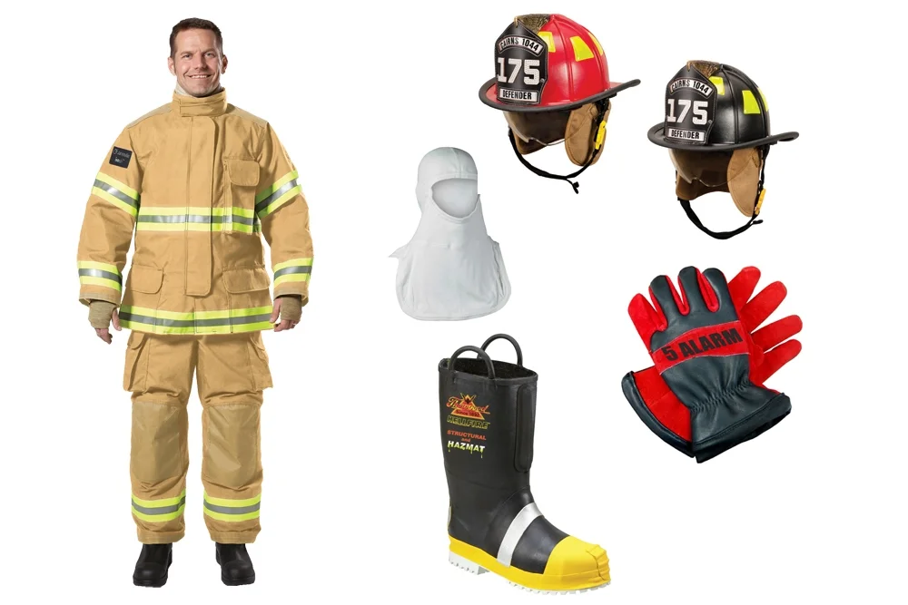
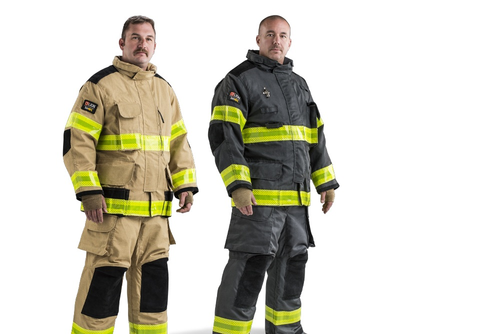
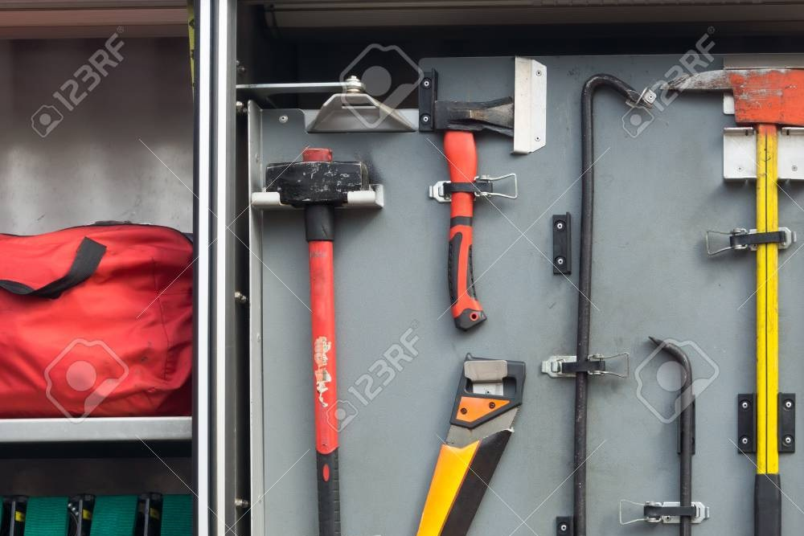
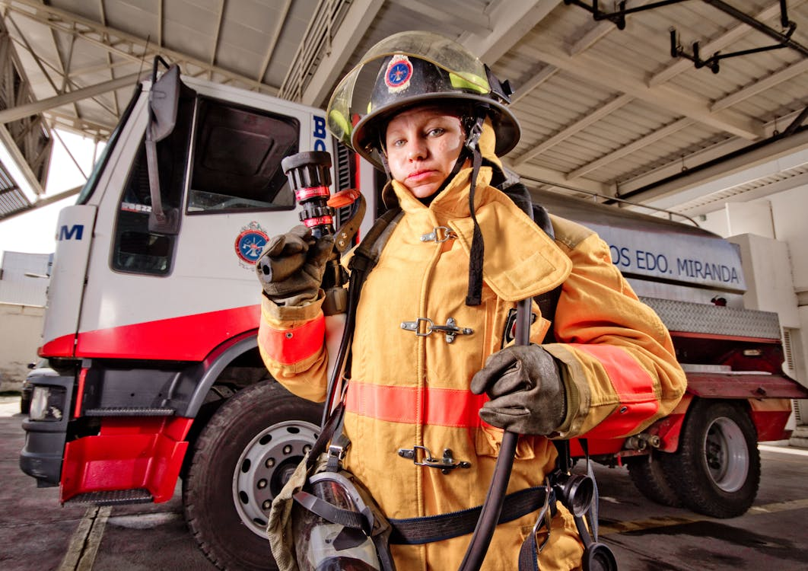
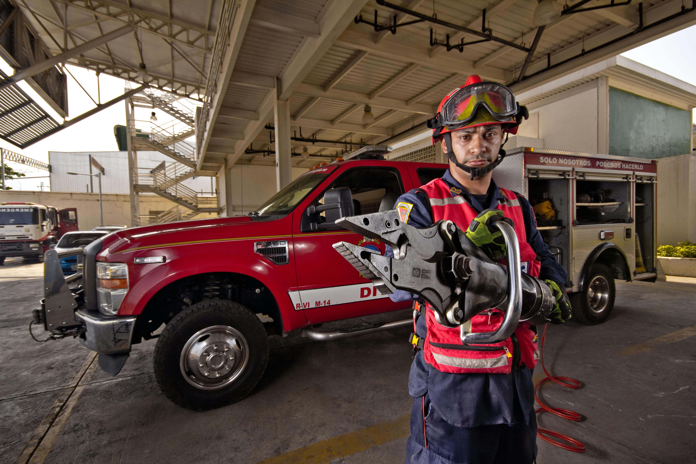
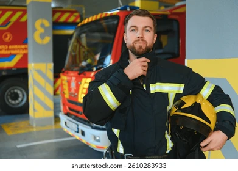

Estas son las herramientas y uniformes recibidos gracias al apoyo de la comunidad internacional, que permiten a nuestros bomberos enfrentar emergencias.
Más de 500 equipos entregados a cuerpos de bomberos en distintas regiones.
Equipos entregados
Bomberos beneficiados
Regiones apoyadas
Conoce en detalle cada uno de los equipos que entregamos gracias a tus donaciones

Diseñado para resistir altas temperaturas y proteger contra impactos.

Permiten manipular herramientas en condiciones extremas.

Equipos esenciales para operaciones de emergencia y rescate.
Bomberos que han recibido apoyo gracias a las donaciones

"Gracias a este equipo pudimos responder a incendios con mayor seguridad."

"El apoyo recibido marcó la diferencia en situaciones críticas."

"Ahora contamos con herramientas adecuadas para salvar más vidas."